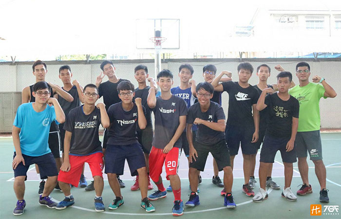

貼文時間：2017/09/27

台南二中位於台南市區，公園北路及北門路交叉口，學校以足球隊著稱，但籃球相對而言仍是主要校園運動，球員配合度高，自立自發，在校園的角落燃燒他們的籃球夢……
南二中球隊原先為社團性質，至92學年度開始有志願教練帶領，學生漸由興趣性質轉為團體競爭，擔任體育組長的林家偉老師表示，南二中為升學學校，校內運動風氣還算不錯，只要學生有心，在不影響課業的情況下能幫多少是多少，但同樣地學生須拿出態度及良好的品德，維持學生的本分。
訓練上，林組長表示，球隊練習時間有限，過往主要會去加強個人能力、接球投籃的基本功、籃下動作等，現在則更注重團隊合作，運用傳導製造空檔。
去年度乙級聯賽，南二中雖在預賽即遭淘汰，但整體的比賽質感是可以期待的，對於今年度的調整，組長表示，主要會加強體能的訓練，以及對包夾防守的應對能力，練習時間雖然短暫，但球員向心力高，除了學長帶學弟外，最讓人欣慰的是，即使今年教練離開，球員參與練習的意願不減反增，隊伍人數及氣氛都有提升，上下風氣令人滿意，因此，也希望能替球隊找到一位合適的教練，將短期目標放在南區複賽，重振二中球隊的名聲。
台南二中在沒有教練、室內體育館的情況下，藉由學長帶學弟的訓練，傳承態度，努力經營著二中籃球隊，在小小校園的某個角落，做著他們的籃球夢，讓我們給予更多的鼓勵，關注乙級三百間與二中同樣艱辛的學校吧！